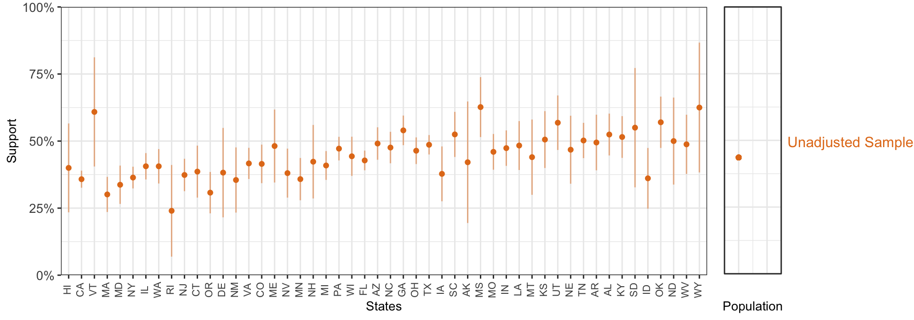
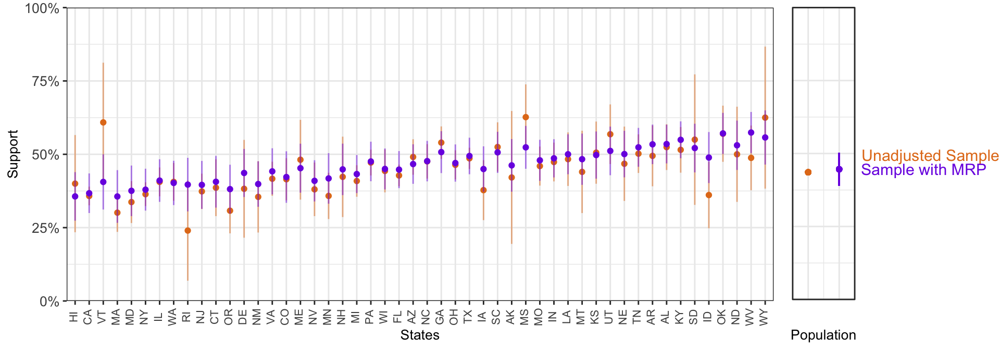
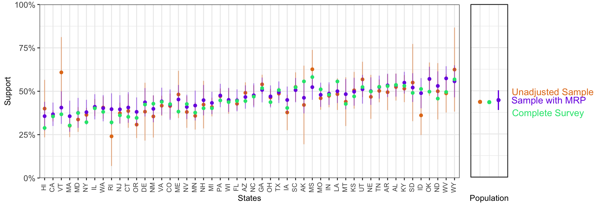
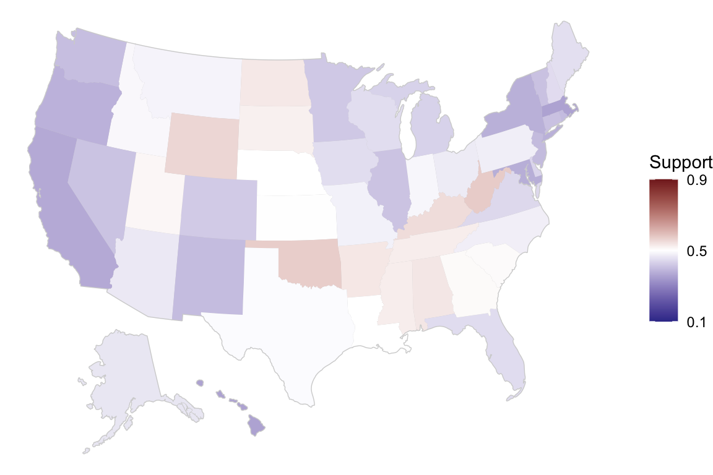
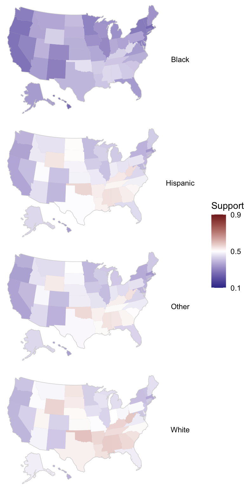
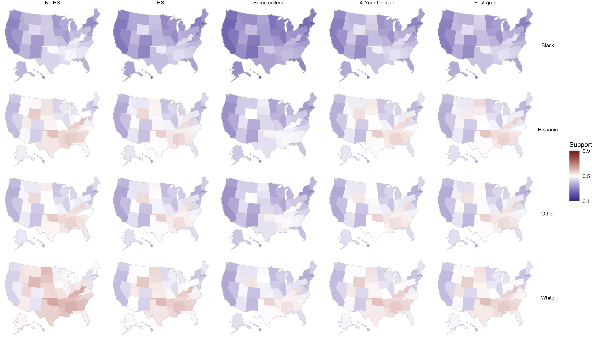
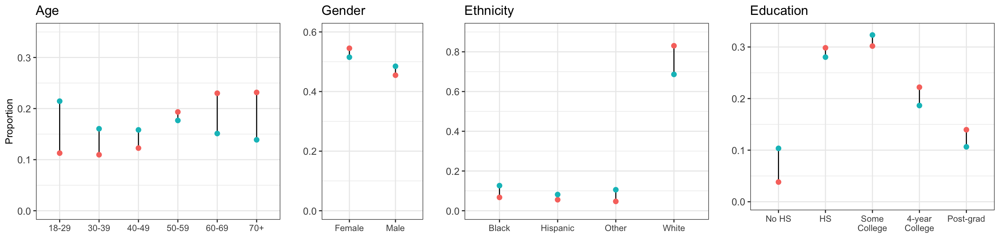
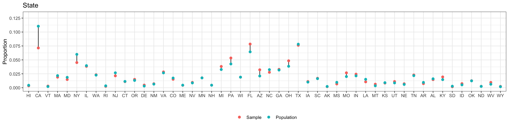
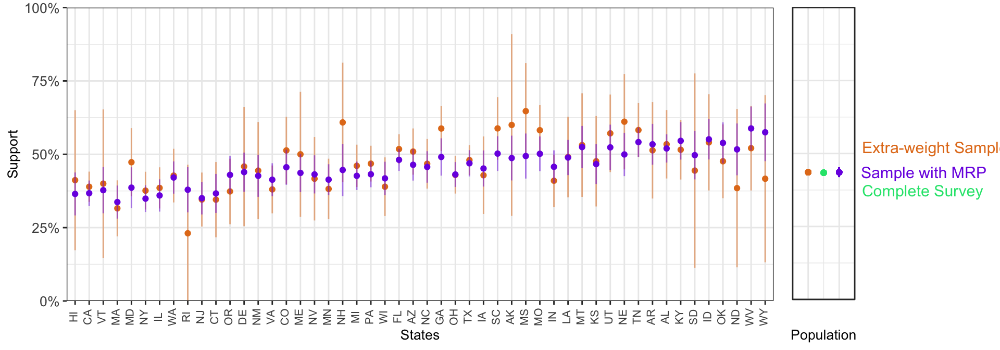

Chapter 2 Introduction to Multilevel Modeling and Poststratification (MRP)
The first stage of MRP is building an individual-response model whch takes all responses in a (national-level) survey and uses a multilevel regression model to get estimates and make predictions based on demographic-geographic subgroups (e.g. the subgroup consisting of white women between ages 50-59 with postgraduate education residing in California). The second stage of MRP takes the modeled estimate for each subgroup and weights it by the subgroup frequency at the (national or subnational) unit of interest.
2.1 First stage: Estimating the Individual-Response Model
In the first stage we use a multilevel logistic regression model to predict the outcome measure given the different factors we are considering. Having a plausible model to predict opinion is central for MRP to work well. The model we use in this example is described below. It includes varying intercepts for age, ethnicity, and state, where the variation for the state intercepts is in turn influenced by the region effects (coded as indicator variables) and the Republican vote share in the 2016 election. As there are only two levels for gender, it is preferable to model it as a predictor for computational efficiency. Additionally, we include varying intercepts for the interaction between male and ethnicity, education and age, and education and ethnicity (see Ghitza and Gelman (2013) for an in-depth discussion on the advantages of including interactions).
\[ Pr(y_i = 1) = logit^{-1}( \alpha_{\rm s[i]}^{\rm state} + \alpha_{\rm a[i]}^{\rm age} + \alpha_{\rm r[i]}^{\rm eth} + \alpha_{\rm e[i]}^{\rm educ} + \beta^{\rm male} \cdot {\rm Male}_{\rm i} + \alpha_{\rm g[i], r[i]}^{\rm male.eth} + \alpha_{\rm e[i], a[i]}^{\rm educ.age} + \alpha_{\rm e[i], r[i]}^{\rm educ.eth} ) \] where:
\[ \begin{align*} \alpha_{\rm s}^{\rm state} &\sim {\rm Normal}(\gamma^0 + \gamma^{\rm south} \cdot {\rm South}_{\rm s} + \gamma^{\rm northcentral} \cdot {\rm NorthCentral}_{\rm s} + \gamma^{\rm west} \cdot {\rm West}_{\rm s} + \gamma^{\rm repvote} \cdot {\rm RepVote}_{\rm s}, \sigma^{\rm state}) \textrm{ for s = 1,...,50}\\ \alpha_{\rm a}^{\rm age} & \sim {\rm Normal}(0,\sigma^{\rm age}) \textrm{ for a = 1,...,6}\\ \alpha_{\rm r}^{\rm eth} & \sim {\rm Normal}(0,\sigma^{\rm eth}) \textrm{ for r = 1,...,4}\\ \alpha_{\rm e}^{\rm educ} & \sim {\rm Normal}(0,\sigma^{\rm educ}) \textrm{ for e = 1,...,5}\\ \alpha_{\rm g,r}^{\rm male.eth} & \sim {\rm Normal}(0,\sigma^{\rm male.eth}) \textrm{ for g = 1,2 and r = 1,...,4}\\ \alpha_{\rm e,a}^{\rm educ.age} & \sim {\rm Normal}(0,\sigma^{\rm educ.age}) \textrm{ for e = 1,...,5 and a = 1,...,6}\\ \alpha_{\rm e,r}^{\rm educ.eth} & \sim {\rm Normal}(0,\sigma^{\rm educ.eth}) \textrm{ for e = 1,...,5 and r = 1,...,4}\\ \end{align*} \]
The rstanarm package allows the user to conduct complicated regression analyses in Stan with the simplicity of standard formula notation in R. stan_glmer(), the function that allows to fit generalized linear multilevel models, uses the same notation as the lme4 package (see documentation here). That is, we specify the varying intercepts as (1 | group) and the interactions are expressed as (1 | group1:group2), where the : operator creates a new grouping factor that consists of the combined levels of the two groups (i.e. this is the same as pasting together the levels of both factors). However, this syntax only accepts predictors at the individual level, and thus the two state-level predictors must be expanded to the individual level (see [p. 265-266]Gelman and Hill (2007)). Notice that:
\[ \begin{align*} \alpha_{\rm s}^{\rm state} &\sim {\rm Normal}(\gamma^0 + \gamma^{\rm south} \cdot {\rm South}_{\rm s} + \gamma^{\rm northcentral} \cdot {\rm NorthCentral}_{\rm s} + \gamma^{\rm west} \cdot {\rm West}_{\rm s} + \gamma^{\rm repvote} \cdot {\rm RepVote}_{\rm s}, \sigma^{\rm state}) \\ &= \underbrace{\gamma^0}_\text{Intercept} + \underbrace{{\rm Normal}(0, \sigma^{\rm state})}_\text{State varying intercept} + \underbrace{\gamma^{\rm south} \cdot {\rm South}_{\rm s} + \gamma^{\rm northcentral} \cdot {\rm NorthCentral}_{\rm s} + \gamma^{\rm west} \cdot {\rm West}_{\rm s} + \gamma^{\rm repvote} \cdot {\rm RepVote}_{\rm s}}_\text{State-level predictors expanded to the individual level} \end{align*} \]
Consequently, we can then reexpress the model as:
\[ Pr(y_i = 1) = logit^{-1}( \gamma^0 + \alpha_{\rm s[i]}^{\rm state} + \alpha_{\rm a[i]}^{\rm age} + \alpha_{\rm r[i]}^{\rm eth} + \alpha_{\rm e[i]}^{\rm educ} + \beta^{\rm male} \cdot {\rm Male}_{\rm i} + \alpha_{\rm g[i], r[i]}^{\rm male.eth} + \alpha_{\rm e[i], a[i]}^{\rm educ.age} + \alpha_{\rm e[i], r[i]}^{\rm educ.eth} + \gamma^{\rm south} \cdot {\rm South}_{\rm s} \\ + \gamma^{\rm northcentral} \cdot {\rm NorthCentral}_{\rm s} + \gamma^{\rm west} \cdot {\rm West}_{\rm s} + \gamma^{\rm repvote} \cdot {\rm RepVote}_{\rm s}) \]
In the previous version of the model, \(\alpha_{\rm s[i]}^{\rm state}\) was informed by several state-level predictors. This reparametrization expands the state-level predictors at the individual level, and thus \(\alpha_{\rm s[i]}^{\rm state}\) now represents the variance introduced by the state adjusting for the region and 2016 Republican vote share. Similarly, \(\gamma^0\), which previously represented the state-level intercept, now becomes the individual-level intercept. The two parameterizations of the multilevel model are mathematically equivalent, and using one or the other is simply a matter of preference. The former one highlights the role that state-level predictos have in accounting for structured differences among the states, while the later is closer to the rstanarm syntax.
# Expand state-level predictors to the individual level
q_abort_10K_df<- left_join(q_abort_10K_df, statepred_df, by = "state")| abortion | state | eth | male | age | educ | repvote | region |
|---|---|---|---|---|---|---|---|
| 1 | WI | White | -0.5 | 60-69 | 4-Year College | 0.5040799 | North Central |
| 1 | NJ | White | -0.5 | 60-69 | HS | 0.4271581 | Northeast |
| 0 | FL | White | -0.5 | 40-49 | HS | 0.5061884 | South |
| 1 | FL | White | 0.5 | 70+ | Some college | 0.5061884 | South |
| 0 | IL | White | -0.5 | 50-59 | Some college | 0.4097995 | North Central |
| 0 | OK | Other | -0.5 | 18-29 | Some college | 0.6930474 | South |
# Fit in stan_glmer
# fit <- stan_glmer(abortion ~ (1 | state) + (1 | eth) + (1 | educ) + male +
# (1 | male:eth) + (1 | educ:age) + (1 | educ:eth) +
# repvote + factor(region),
# family = binomial(link = "logit"),
# data = q_abort_10K_df,
# prior = normal(0, 1, autoscale = TRUE),
# prior_covariance = decov(scale = 0.50),
# adapt_delta = 0.99,
# refresh = 0,
# seed = 1010)
# saveRDS(fit, file = "fit_mrp_1.rds")
fit <- readRDS("fit_mrp_1.rds")As a first pass to check whether the model is performing well, we must check that there are no warnings about divergences, failure to converge or tree depth. Fitting the model with the default settings produced a few divergent transitions, and thus we decided to try increasing adapt_delta to 0.99 and introducing stronger priors than the rstanarm defaults. After doing this, the divergences dissapeared. In the Computational Issues subsection of this case study we provide more details about divergent transitions and potential solutions.
print(fit)stan_glmer
family: binomial [logit]
formula: abortion ~ (1 | state) + (1 | eth) + (1 | educ) + male + (1 |
male:eth) + (1 | educ:age) + (1 | educ:eth) + repvote + factor(region)
observations: 10000
------
Median MAD_SD
(Intercept) -1.3 0.3
male 0.3 0.1
repvote 1.9 0.3
factor(region)Northeast 0.0 0.1
factor(region)South 0.2 0.1
factor(region)West 0.0 0.1
Error terms:
Groups Name Std.Dev.
state (Intercept) 0.131
educ:age (Intercept) 0.231
educ:eth (Intercept) 0.099
male:eth (Intercept) 0.188
eth (Intercept) 0.341
educ (Intercept) 0.277
Num. levels: state 50, educ:age 18, educ:eth 12, male:eth 8, eth 4, educ 3
------
* For help interpreting the printed output see ?print.stanreg
* For info on the priors used see ?prior_summary.stanreg2.2 Second Stage: Poststratification
The individual-response model predicts support on the option for declining abortion coverage given a number of factor-type predictors. To go from this model to a national or sub-national estimate, we need to weight the model predictions for the different subgroups by the actual frequency of these subgroups, as expressed by the formula
\[ \theta^{MRP} = \frac{\sum N_{\rm subgroup} \theta_{\rm subgroup}}{\sum N_{\rm subgroup}} \]
where \(\theta^{MRP}\) is the MRP estimate, \(\theta_{\rm subgroup}\) corresponds to the model estimate for a specific subgroup (e.g. young Hispanic men with a High School diploma in Arkansas), and \(N_{\rm subgroup}\) corresponds to the number of people in that subgroup according to the ACS. For a more in-depth review of poststratification, see Chapter 13 of Gelman, Hill, and Vehtari (2020).
The values of \(\theta_{subgroup}\) for the different subgroups can be obtained with the posterior_epred() function. Of course, as stan_glmer() performs Bayesian inference, \(\theta_{subgroup}\) for any given subgroup will not be a single point estimate but a vector of posterior draws.
# Expand state level predictors to the individual level
postrat_df <- left_join(postrat_df, statepred_df, by = "state")
knitr::kable(head(postrat_df), format = 'markdown')| X | state | eth | male | age | educ | n | repvote | region |
|---|---|---|---|---|---|---|---|---|
| 1 | AL | White | -0.5 | 18-29 | No HS | 23948 | 0.6437414 | South |
| 2 | AL | White | -0.5 | 18-29 | HS | 59378 | 0.6437414 | South |
| 3 | AL | White | -0.5 | 18-29 | Some college | 104855 | 0.6437414 | South |
| 4 | AL | White | -0.5 | 18-29 | 4-Year College | 37066 | 0.6437414 | South |
| 5 | AL | White | -0.5 | 18-29 | Post-grad | 9378 | 0.6437414 | South |
| 6 | AL | White | -0.5 | 30-39 | No HS | 14303 | 0.6437414 | South |
The function posterior_epred() returns a matrix \(P\) with \(D\) rows and \(J\) columns, where \(D\) corresponds to the number of draws from the posterior distribution (in this case 1000, as we specified draws = 1000) and \(J\) is the number of subgroups in the poststratification table (i.e. 12,000). This matrix is multiplied by a vector \(k\) of length \(J\) that contains the number of people in each subgroup of the poststratification table. This results in a vector of length \(D\) that is then divided by the sum of the people considered in the poststratification table, a scalar which is calculated by adding all the values in \(k\).
\[\theta^{MRP} = \frac{P \times k}{\sum_j^J k_j}\]
The resulting vector \(\theta^{MRP}\) contains \(D\) estimates for the national-level statement support.
# posterior_epred returns the posterior estimates for each cell of postrat_df
epred_mat <- posterior_epred(fit, newdata = postrat_df, draws = 1000)
epred_vec <- epred_mat %*% postrat_df$n / sum(postrat_df$n)
theta_mrp <- c(mean = mean(epred_vec), sd = sd(epred_vec))
cat("MRP estimate mean, sd: ", round(theta_mrp, 2), "\n")MRP estimate mean, sd: 0.45 0.03 Compare the estimated results (above) to the 10,000-person unadjusted sample estimate and to the full survey:
sample_popn_support <- c(mean = mean(q_abort_10K_df$abortion), se = sqrt(mean(q_abort_10K_df$abortion)*(1-mean(q_abort_10K_df$abortion))/nrow(df)))
all_popn_support <- c(mean = mean(q_abort_df$abortion),
se = sqrt(mean(q_abort_df$abortion)*(1-mean(q_abort_df$abortion))/nrow(q_abort_df)))
cat("Unadjusted survey sub-sample mean, sd: ", round(sample_popn_support, 2), "\n")Unadjusted survey sub-sample mean, sd: 0.44 cat("Unadjusted full survey mean, sd: ", round(all_popn_support, 2), "\n")Unadjusted full survey mean, sd: 0.43 0 At the national level, both the unadjusted sample estimate and the MRP estimate are quite close to the results of the full survey. In other words, MRP is not providing a notable advantage against the unadjusted sample national estimates. However, it is important to clarify that we were somewhat lucky in obtaining this result as a product of using data from the CCES, a high quality survey that intends to be representative (and appears to be, at least with respect to the variables considered in our poststratification table). Many real-world surveys are not as representative relative to the variables considered in the poststratification step, and in these cases MRP will help correcting the biased estimates from the unadjusted survey. We will see an example of this in section (to-be-crosslined), where we exemplify how MRP adjusts a clearly biased sample.
2.3 MRP for Small Area Estimation
At the sub-national level, the utility of MRP becomes apparent. To demonstrate, we estimate the per-state support for employer’s right to decline coverage of abortion:
\[ y_{\rm state}^{MRP} = \frac{\sum_{\rm subgroup \in state} N_{\rm subgroup} \theta_{\rm subgroup}}{\sum_{\rm subgroup \in state} N_{\rm subgroup}} \]
# National mean
pop_estimate_all <- mean(q_abort_df$abortion)
# Per state mean, raw counts
state_estimates_all <- q_abort_df %>% group_by(state) %>% summarise(estimate = mean(abortion))
state_n_all <- q_abort_df %>% group_by(state) %>% summarise(N_all = n())
state_estimates_all$statename <- state_ab
# Create empty dataframe
num_states = length(state_fips)
state_df <- data.frame(
state_fips = state_fips,
state = state_ab,
mrp_state_support = rep(NA, num_states),
mrp_state_sd = rep(NA, num_states),
sample_state_support = rep(NA, num_states),
all_state_support = rep(NA, num_states),
N = rep(NA, num_states),
N_all = rep(NA, num_states)
)
state_df$state = fct_reorder(state_df$state, statepred_df$repvote) # order L-R == voteshare GOP# The matrix P and the poststratification table contain 12,000 rows.
# Loop over state ID, fill in postrat cells for that state.
for(i in 1:length(levels(postrat_df$state))) {
filtering_condition <- which(postrat_df$state == state_df$state[i])
P_filtered <- epred_mat[ ,filtering_condition]
k_filtered <- postrat_df[filtering_condition, ]$n
# Poststratification step
poststrat_prob_state <- P_filtered %*% k_filtered / sum(k_filtered)
# This is the MRP estimate for the state
state_df$mrp_state_support[i] <- mean(poststrat_prob_state)
state_df$mrp_state_sd[i] <- sd(poststrat_prob_state)
# This is the 10,000 sample survey estimate for the state, this time filtering df
state_df$sample_state_support[i] <- mean(q_abort_10K_df$abortion[q_abort_10K_df$state == state_ab[i]])
# This is the 60000-person survey estimate for the state
state_df$all_state_support[i] <- state_estimates_all$estimate[state_estimates_all$statename == state_ab[i]]
# Sample size in state i for the 10,000 sample survey
state_df$N[i] <- nrow(q_abort_10K_df[q_abort_10K_df$state == state_ab[i], ])
# Sample size in state i for the full 60,000 survey
state_df$N_all[i] <- state_n_all$N_all[state_n_all$state==state_ab[i]]
}We start by plotting the estimates by state from the unadjusted 10,000-person sample. Again, the states are ordered by Republican vote in the 2016 election, and therefore we expect that statement support will follow an increasing trend.

In states with small samples, we see considerably wide 95% confidence intervals. We can add the MRP-adjusted estimates to this plot.

In general, MRP produces less extreme values by partially pooling information across the factor levels. To illustrate this, we can compare the sample and MRP estimates with the results form the full 60,000-respondent CCES. Of course, in any applied situation we would be using the full survey, but as we took a 10,000 person sample the full 60,000-respondent survey serves as a reference point.

Overall, the MRP estimates are closer to the full survey estimates. This is particularly clear for the states with a smaller sample size.
As a final way of presenting the MRP estimates, we can plot them on a US map. The symmetric color range goes from 10% to 90% support, as this scale allows for comparison with the other maps. However, the MRP estimates for statement support are concentrated in a relatively small range, which makes the colors appear muted.

2.3.1 Estimation for subgroups within sub-national units
MRP can also be used to obtain estimates for more complex cases, such as subgroups within states. For instance, we can study support for declining coverage of abortions by state and ethnicity within state. For clarity, we order the races according to their support for the statement.

Similarly, we can look at the outcome in ethnicity-education subgroups by state.

2.4 Adjusting for Nonrepresentative Surveys
We have already introduced that MRP is an effective statistical adjustment method to correct for differences between the sample and target population for a set of key variables. We start this second example by obtaining an artificially nonrepresentative sample that gives more weight to respondents that are older, male, and from Republican states.
set.seed(1010)
# We add the state-level predictors to q_abort_df
q_abort_df <- left_join(q_abort_df, statepred_df, by = "state")
# We take a sample from q_abort_df giving extra weight to respondents that are older, male, white, and from Republican states.
extra_wt_df <- q_abort_df %>% sample_n(5000, weight = I(5*repvote + (age=="18-29")*0.5 + (age=="30-39")*1 +
(age=="40-49")*2 + (age=="50-59")*4 +
(age=="60-69")*6 + (age=="70+")*8 + (male==1)*20 +
(eth=="White")*1.05))The following plots show how this reweighted sample differs from the population. Now there is a strong age trend in the sample, not present in the population; compare this plot to the earlier plots in the exploratory data analysis section.


As before, we fit the model to the data.
Next we poststratify to the state level, as in the [previous section](#postrat-state}.
epred2_mat <- posterior_epred(fit2, newdata = postrat_df, draws = 100)
epred2_vec <- epred2_mat %*% postrat_df$n / sum(postrat_df$n)
theta2_mrp <- c(mean = mean(epred2_vec), sd = sd(epred2_vec))
cat("MRP estimates: ", round(theta2_mrp, 2), "\n")MRP estimates: 0.44 0.01 extra_wt_popn_support <- c(mean = mean(extra_wt_df$abortion), se = sqrt(mean(extra_wt_df$abortion)*(1-mean(extra_wt_df$abortion))/nrow(extra_wt_df)))
cat("Extra-weight survey estimate: ", round(extra_wt_popn_support, 2), "\n")Extra-weight survey estimate: 0.46 0.01 The nonrepresentative sample produces estimates that are differnt from those obtained from a random subsample of the survey in the previous section.
We plot the estimates by state from the extra-weighted sample. Again, the states are ordered by Republican vote in the 2016 election, and therefore we expect that statement support will follow an increasing trend. MRP seems to partially correct for the nonrepresentative sample, furthermore, the MRP national and sub-national estimates based on the nonrepresentative sample are, overall, much closer to the 60,000-person survey than the biased unadjusted sample estimates.

2.5 Practical Considerations
2.5.1 Census incompletness and uncertainty
There are two main problems we can encounter when dealing with census data.
It is possible that some variables that we may want to use for poststratification are not available. For instance, party ID is not registered in the US census and ethnicity is not registered in the French census. This additional information can be included in the poststratification table based on other (generally smaller) surveys that contain these variables.
A great number of factors may require a large poststratification table, which in turn can result in unreliable census estimates. The American Community Survey we use in this case study does not only provide estimates of the actual figures that would have been obtained if the entire population was sampled, it also includes a measure of uncertainty around these estimates. Ideally, this uncertainty should be taken into account in the poststratification. For simplicity, this introduction has skipped this step, but this could mean the MRP-based estimates present an underestimated uncertainty.
2.5.2 Nonreponse and missing data
We have seen that MRP is a method that can mitigate potential biases in the sample, but it is not a substitute for a better data collection effort that tries to minimize systematic nonresponse patterns.
2.5.3 Model complexity
MRP depends upon the use of a regularized model (i.e. that prevents overfitting by controlling its complexity). Different approaches can be used for this goal (e.g. non-multilevel regression, random forests, or a neural network; see Bisbee (2019) for an implementation that uses Bayesian Additive Regression Trees), but there are several advantages of using a Bayesian multilevel model. First, the multilevel structure allows for partially pooling information across different levels of a factor, which can be crucial when dealing with certain levels with few samples. Second, the Bayesian approach propagates uncertainty across the modeling, and thus gives more realistic confidence intervals.
Apart from selecting the factors included in the poststratification table, there are several decisions the modeler should make. As we have already mentioned, adding relevant state-level predictors to the model often improves results, particularly when we have few data about some states. The inclusion of interactions can also be benefitial, especially when studying subgroups within subgroups (e.g. demographic subgroups within states; Ghitza and Gelman (2013)). Lastly, the use of structured priors can also serve to reduce both bias and variance by sharing information across the levels of a factor (Gao et al. (2020)).
2.5.4 Empty cells in the poststratification table
It is very frequent that some of the cells in the poststratification table are empty, meaning that there are not anyone that fulfills some specific combination of factors. For instance, in a small state there can be no people younger than 30, without a high school degree, and earning more than $500,000 a year. In our example, we made sure that all the cells in the poststratification table were present even if the weight of that cell was zero, but this was only for illustrative purposes.
2.5.5 Subnational units not represented in the survey
It is fairly common for small-sample surveys not to include anyone from a particular subnational unit. For instance, a small national survey in the US may not include any participant from Wyoming. An important advantage of MRP is that we can still produce estimates for this state using the information from the participants in other states. Going back to the first parametrization of the multilevel model that we presented, \(\alpha^{\rm state}_{\rm s = Wyoming}\) will be calculated based on the region and Republican voteshare of the 2016 – even in the abscence of information about the effect of residing in Wyoming specifically. As we have already explained, including subnational-level predictors is always recommended, particularly considering that data at the subnational level is easy to obtain in many cases. However, when dealing with subnational units that are not represented in our survey these predictors become even more central, as they are able to capture structured differences among the states and therefore allow for more precise estimation in the missing subnational areas.
2.5.6 Computational issues
Stan uses Hamiltonian Monte Carlo to explore the posterior distribution. In some cases, the geometry of the posterior distribution is too complex, making the Hamiltonian Monte Carlo “diverge”. This produces a warning indicating the presence of divergent transitions after warmup, something that implies the model could present biased estimates (see Betancourt (2017) for more details). Usually, a few divergent transitions do not indicate a serious problem. There are, in any case, three potential solutions to this problem that do not involve reformulating the model: (i) a non-centered parametization; (ii) increasing the adapt_delta parameter; and (iii) including stronger priors. Fortunately we don’t have to worry about (i), as rstanarm already provides a non-centered parametization for the model. Therefore, we can focus on the other two.
Exploring the posterior distribution is somewhat similar as cartographing a mountainous terrain, and a divergent transition is similar to falling down a very steep slope, with the consequence of not being able to correctly map that area. In this analogy, what the cartographer could do is moving through the steep slope giving smaller steps to avoid falling. In Stan, the step size is set up automatically, but we can change a parameter called
adapt_deltathat controls the step size. By default we have thatadapt_delta = .95, but we can increase that number to make Stan take smaller steps, which should reduce the number of divergent transitions. The maximum value we can set foradapt_deltais close (but necessarely less than) 1, with the downside that an increase implies a somewhat slower exploration of the posterior distribution. Usually, anadapt_delta = 0.99works well if we only have a few divergent transitions.However, there are cases in which increasing
adapt_deltais not sufficient, and divergent transitions still occur. In this case, introducing weakly informative priors can be extremelly helpful. Althoughrstanarmprovides by default weakly informative priors, in most applications these tend to be too weak. By using more reasonable priors, we make the posterior distribution easier to explore.- The priors for the scaled coefficients are \({\rm Normal}(0, 2.5)\). When the coefficients are not scaled,
rstanarmwill automatically adjust the scaling of the priors as detailed in the prior vignette. In most cases, and particularly when we find computational issues, it is reasonable to give stronger priors on the scaled coefficients such as \({\rm Normal}(0, 1)\). - Multilevel models with multiple group-level standard deviation parameters (e.g. \(\sigma^{\rm age}\), \(\sigma^{\rm eth}\), \(\sigma^{\rm educ.eth}\), etc.) tend to be hard to estimate and sometimes present serious computational issues. The default prior for the covariance matrix is
decov(reg. = 1, conc. = 1, shape = 1, scale = 1). However, in a varying-intercept model such as this one (i.e. with structure(1 | a) + (1 | b) + ... + (1 | n)) the group-level standard deviations are independent of each other, and therefore the prior is simply a gamma distribution with some shape and scale. Consequently,decov(shape = 1, scale = 1)implies a weakly informative prior \({\rm Gamma(shape = 1, scale = 1)} = {\rm Exponential(scale = 1)}\) on each group-level standard deviation. This is too weak in most situations, and using something like \({\rm Exponential(scale = 0.5)}\) can be crucial for stabilizing computation.
- The priors for the scaled coefficients are \({\rm Normal}(0, 2.5)\). When the coefficients are not scaled,
Therefore, something like this has much fewer chances of running into computational issues than simply leaving the defaults:
fit <- stan_glmer(abortion ~ (1 | state) + (1 | eth) + (1 | educ) + (1 | age) + male +
(1 | male:eth) + (1 | educ:age) + (1 | educ:eth) +
repvote + factor(region),
family = binomial(link = "logit"),
data = df,
prior = normal(0, 1, autoscale = TRUE),
prior_covariance = decov(scale = 0.50),
adapt_delta = 0.99,
refresh = 0,
seed = 1010)More details about divergent transitions can be found in the Brief Guide to Stan’s Warnings and in the Stan Reference Manual. More information and references about priors can be found in the Prior Choice Recommendations Wiki.
Betancourt, Michael. 2017. “A Conceptual Introduction to Hamiltonian Monte Carlo.” arXiv Preprint arXiv:1701.02434.
Bisbee, James. 2019. “BARP: Improving Mister P Using Bayesian Additive Regression Trees.” American Political Science Review 113 (4): 1060–5.
Buttice, Matthew K, and Benjamin Highton. 2013. “How Does Multilevel Regression and Poststratification Perform with Conventional National Surveys?” Political Analysis 21 (4).
Downes, Marnie, Lyle C Gurrin, Dallas R English, Jane Pirkis, Dianne Currier, Matthew J Spittal, and John B Carlin. 2018. “Multilevel Regression and Poststratification: A Modeling Approach to Estimating Population Quantities from Highly Selected Survey Samples.” American Journal of Epidemiology 187 (8): 1780–90.
Gao, Yuxiang, Lauren Kennedy, Daniel Simpson, Andrew Gelman, and others. 2020. “Improving Multilevel Regression and Poststratification with Structured Priors.” Bayesian Analysis.
Gelman, Andrew, and Jennifer Hill. 2007. Data Analysis Using Regression and Multilevelhierarchical Models. Vol. 1. Cambridge University Press New York, NY, USA.
Gelman, Andrew, Jennifer Hill, and Aki Vehtari. 2020. Regression and Other Stories. Cambridge University Press.
Ghitza, Yair, and Andrew Gelman. 2013. “Deep Interactions with Mrp: Election Turnout and Voting Patterns Among Small Electoral Subgroups.” American Journal of Political Science 57 (3): 762–76.
Kiewiet de Jonge, Chad P, Gary Langer, and Sofi Sinozich. 2018. “Predicting State Presidential Election Results Using National Tracking Polls and Multilevel Regression with Poststratification (Mrp).” Public Opinion Quarterly 82 (3): 419–46.
Lax, Jeffrey R, and Justin H Phillips. 2009a. “Gay Rights in the States: Public Opinion and Policy Responsiveness.” American Political Science Review 103 (3): 367–86.
———. 2009b. “How Should We Estimate Public Opinion in the States?” American Journal of Political Science 53 (1): 107–21.
Park, David K, Andrew Gelman, and Joseph Bafumi. 2004. “Bayesian Multilevel Estimation with Poststratification: State-Level Estimates from National Polls.” Political Analysis 12 (4): 375–85.
Wang, Wei, David Rothschild, Sharad Goel, and Andrew Gelman. 2015. “Forecasting Elections with Non-Representative Polls.” International Journal of Forecasting 31 (3): 980–91.
References
Betancourt, Michael. 2017. “A Conceptual Introduction to Hamiltonian Monte Carlo.” arXiv Preprint arXiv:1701.02434.
Bisbee, James. 2019. “BARP: Improving Mister P Using Bayesian Additive Regression Trees.” American Political Science Review 113 (4): 1060–5.
Gao, Yuxiang, Lauren Kennedy, Daniel Simpson, Andrew Gelman, and others. 2020. “Improving Multilevel Regression and Poststratification with Structured Priors.” Bayesian Analysis.
Gelman, Andrew, and Jennifer Hill. 2007. Data Analysis Using Regression and Multilevelhierarchical Models. Vol. 1. Cambridge University Press New York, NY, USA.
Gelman, Andrew, Jennifer Hill, and Aki Vehtari. 2020. Regression and Other Stories. Cambridge University Press.
Ghitza, Yair, and Andrew Gelman. 2013. “Deep Interactions with Mrp: Election Turnout and Voting Patterns Among Small Electoral Subgroups.” American Journal of Political Science 57 (3): 762–76.